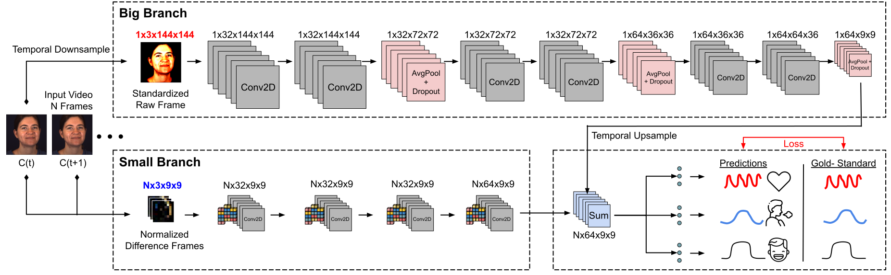
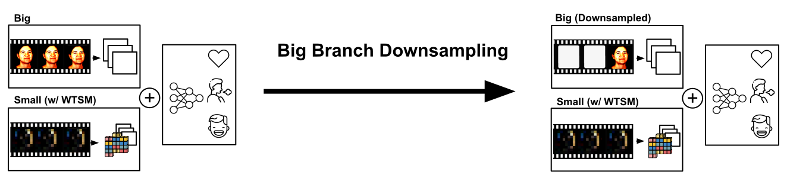
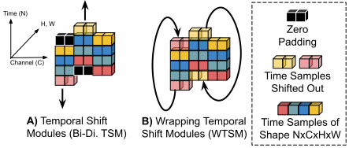

Understanding of human visual perception has historically inspired the design of computer vision architectures. As an example, perception occurs at different scales both spatially and temporally, suggesting that the extraction of salient visual information may be made more effective by paying attention to specific features at varying scales. Visual changes in the body due to physiological processes also occur at different scales and with modality-specific characteristic properties.
Inspired by this, we present BigSmall, an efficient architecture for physiological and behavioral measurement. We present the first joint camera-based facial action, cardiac, and pulmonary measurement model. We propose a multi-branch network with wrapping temporal shift modules that yields both accuracy and efficiency gains. We observe that fusing low-level features leads to suboptimal performance, but that fusing high level features enables efficiency gains with negligible loss in accuracy. Experimental results demonstrate that BigSmall significantly reduces the computational costs. Furthermore, compared to existing task-specific models, BigSmall achieves comparable or better results on multiple physiological measurement tasks simultaneously with a unified model.
BigSmall leverages a dual branch architecture, consisting of a Big branch to model high fidelity spatial features using high-resolution raw-frame inputs, and a Small branch to model temporal dynamics using low-resolution difference-frame inputs.
BigSmall frames the Big branch as a means to model relatively low-frequency spatial signals, while the Small branch models relatively high-frequency temporals. BigSmall is thus able to temporally-downsample the Big branch inputs to a fraction of the inputs seen by the Small branch. As compute of the model is driven by the Big branch convolutions, this downsampling results in a significant compute benefit. Sepcifically, if the Big branch sees 1/N frames seen by the Small branch the compute is reduced by a factor of approximately N.
BigSmall introduces Wrapping Temporal Shift Modules (WTSM), which allow for inter-frame information sharing, thus allowing for more robhust temporal modeling in the Small branch. Unlike traditional TSMs, WTSMs wrap shifted-out frame channels to eliminate zero-filled feature maps. This allows for augmented temporals even when latency constraints are high or training-regiments neccessitate high training batch variance.
The data pre-processsing scripts, machine-learning pipeline, network architevtures, evaluation methods, and pre-trained models can be found at our GitHub Repository. This code is licensed under the MIT License. If you end up making use of any of these material please make sure to cite our paper!
The machine learning pipeline for this work as been adapted from the rPPG-Toolbox, a project to make deep-physiological sensing research more standardized and accessible. The publication for this work can be found here.
@article{narayanswamy2023bigsmall,
title={BigSmall: Efficient Multi-Task Learning for Disparate Spatial and Temporal Physiological Measurements},
author={Narayanswamy, Girish and Liu, Yujia and Yang, Yuzhe and Ma, Chengqian and Liu, Xin and McDuff, Daniel and Patel, Shwetak},
journal={arXiv preprint arXiv:2303.11573},
year={2023}
}